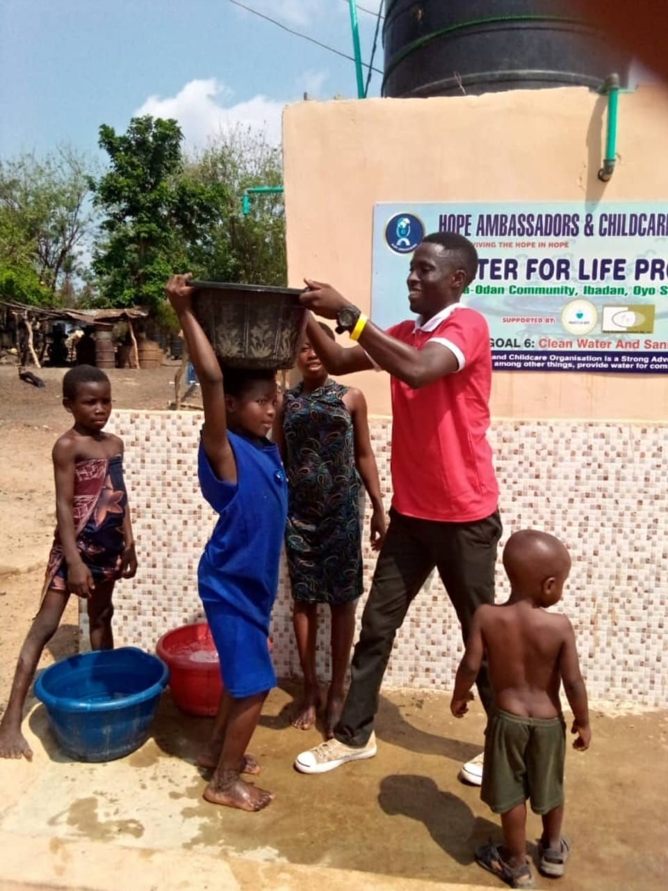
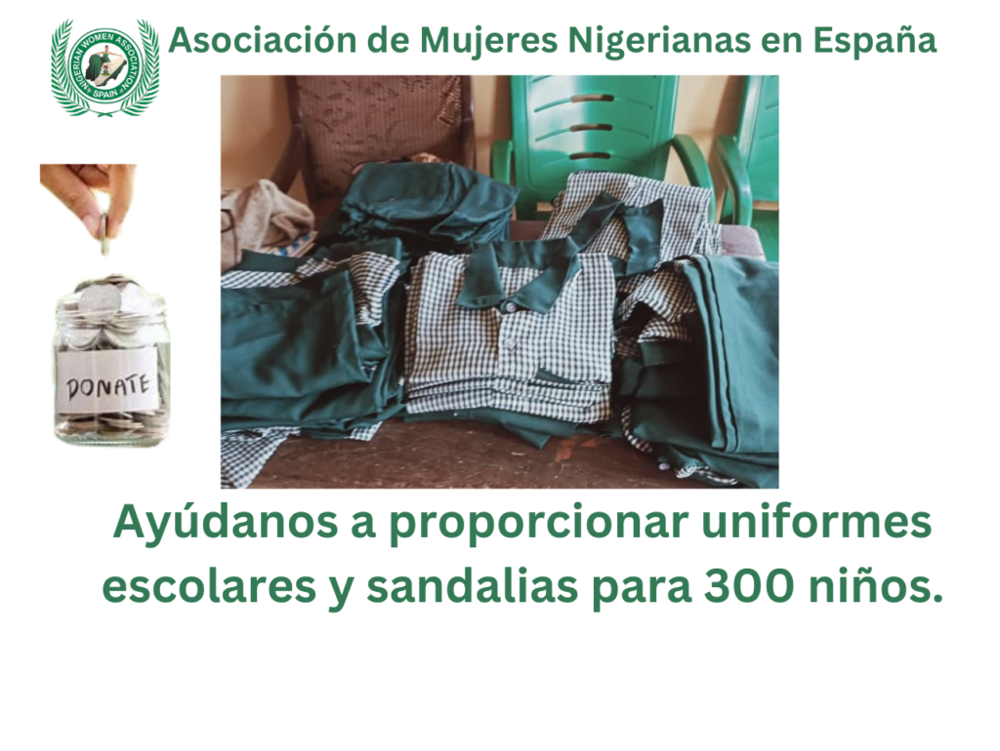

Current campaign
Water for Life
Our goal is to deliver clean water systems to ten Nigerian
communities where water collection keeps children from school.
Donations fund borehole drilling, installation and hygiene
education.
Fund clean water →

Education
Uniforms & sandals
New uniforms and quality footwear protect children, restore
confidence and help ensure poverty is never the reason a willing
child misses class.
Support a pupil →
Women empowerment grants
Seed funding helps women launch or grow micro-enterprises and
create more secure livelihoods.
Food and medical relief
Targeted supplies, health checks, maternal support and emergency
assistance reach families when they need help most.